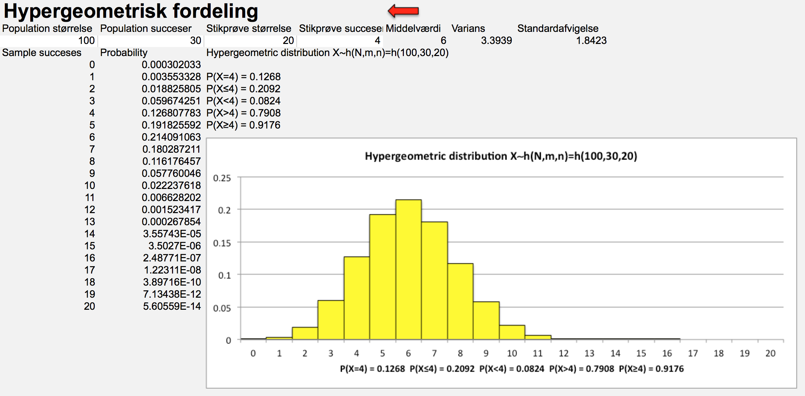
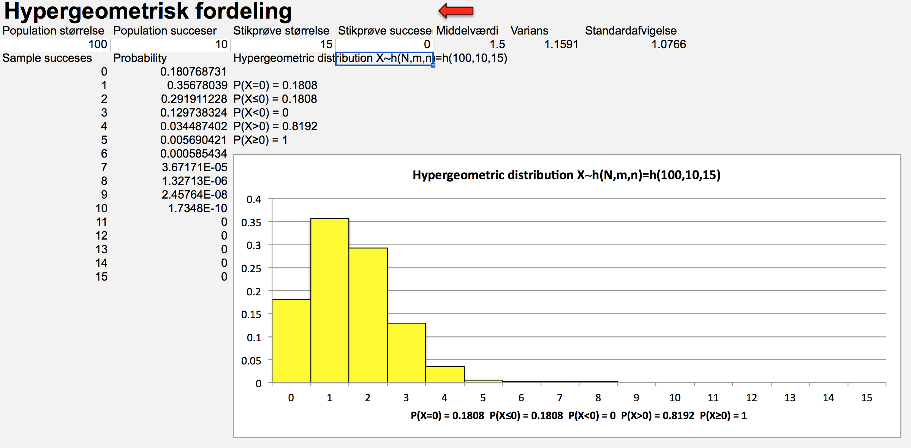

Kapitel 5 Den hypergeometriske fordeling
 Den hypergeometriske fordeling beskriver sandsynligheden for antal successer k i en stikprøve af størrelse n, fra en endelig population af størrelse N. Stikprøven udtages i modsætning til binomialfordelingen, uden tilbagelægning, det betyder sandsynligheden for succes ikke er konstant som for binomialfordelingen.
Den hypergeometriske fordeling beskriver sandsynligheden for antal successer k i en stikprøve af størrelse n, fra en endelig population af størrelse N. Stikprøven udtages i modsætning til binomialfordelingen, uden tilbagelægning, det betyder sandsynligheden for succes ikke er konstant som for binomialfordelingen.
Vi har følgende størrelser når vi ser på den hypergeometiske fordeling:
| Den hypergeometriske fordeling | Population | Stikprøve | Ikke trukket ud |
|---|---|---|---|
| Succes | m | k | m-k |
| Fiasko | N-m | n-k | N + k - n - m |
| Ialt | N | n | N-n |
Antag en endelig population, består af en pose med gule og røde M&M’s N=100, der udtages en stikprøve på n=20 M&M. Succes er gule M&M’s, der er m=30 gule M&M’s i populationen altså posen. Vi siger den stokastiske variabel X, er fordelt efter den hypergeometriske fordeling med parametrene N=100, m=30, n=20 notationen er: \[X \sim h(N=100,m=30,n=20)\] Man kan da beregne sandsynligheden for netop k gule M&M’s i stikprøven vha. den hypergeometriske fordeling. Vi kan for at få et overblik skrive værdierne ind i skemaet.
| Den hypergeometriske fordeling | Population | Stikprøve | Ikke trukket ud |
|---|---|---|---|
| Succes | m=30 | k | m-k=30-k |
| Fiasko | N-m=100-30=70 | n-k=20-k | N + k - n - m=100+k-20-30 |
| Ialt | N=100 | n=20 | N-n=100-20 |
Hver gang vi tager en M&M, ændres sandsynligheden for at næste M&M er gul. Er den trukne M&M rød stiger sandsynligheden for gul i næste trækning, er den gul falder sandsynligheden for gul i næste trækning. Vi lægger ikke de trukne M&M’s tilbage i posen, derfor siger vi “uden tilbagelægning”.
Vi kan udregne punktsandsynligheden for k succeser ud fra den hypergeometriske fordeling, den generelle formel er:
\[P(X=k)=\frac{\binom{m}{k}\cdot \binom{N-m}{n-k}}{\binom{N}{n}}\]
Hvor binomialkoefficienten udregnes som: \[\binom{m}{k}=\frac{m!}{k!\cdot (m-k)!}=\frac{m \cdot (m-1)\cdot...\cdot 1}{k \cdot (k-1)\cdot...\cdot 1\cdot (m-k) \cdot (m-k-1)\cdot(m-k-2)\cdot...\cdot 1}\] Hvis vi i vort eksempel ønsker at beregne sandsynligheden for at trække k=4 gule M&M’s får vi: \[ P(X=4)=\frac{\binom{30}{4}\cdot \binom{100-30}{20-4}}{\binom{100}{4}}=0.1268\]
Hvor fx. binomialkoefficienten
\[\binom{30}{4}=\frac{30!}{4!\cdot (30-4)!}=\frac{30 \cdot 29\cdot...\cdot 1}{4 \cdot 3\cdot 2\cdot 1\cdot 26 \cdot 25\cdot24\cdot...\cdot 1}=27405\]
Sandsynlighedsfordelingen bliver som nedenfor:

 Middelværdien for den hypergeometriske fordeling bestemmes udfra formlen:
Middelværdien for den hypergeometriske fordeling bestemmes udfra formlen:
\[\mu=E(X)=\frac{n\cdot m}{N}\]
I eksemplet med M&M’s bliver middelværdien således:
\[\mu=E(X)=\frac{n\cdot m}{N}=\frac{20\cdot 30}{100}=6\]
Variansen udregnes udfra formlen:
\[\mu=E(X)=\frac{n\cdot m\cdot (N-m)}{N^2}\cdot \frac{N-n}{N-1}\]
I eksemplet med M&M’s bliver variansen:
\[\\sigma^2=Var(X)=\frac{n\cdot m\cdot (N-m)}{N^2}\cdot \frac{N-n}{N-1}=\frac{20\cdot 30\cdot (100-30)}{100^2}\cdot \frac{100-20}{100-1}=3.3939394\]
Standardafvigelsen er jo blot kvadratroden af variansen:
\[\\sigma=sd(X)=1.8422647\]
Nedenfor ses output fra Freestat.

Spørgsmål cigaretter og våben
 En bank giver mulighed for at investere i 100 investeringsforeninger, ud af disse investerer 10 bla. i våben- og tobaksindustrien. Banken kører forskellige afkast simuleringer på vilkårlige porteføljer, der netop indeholder 15 investeringsforeninger.
En bank giver mulighed for at investere i 100 investeringsforeninger, ud af disse investerer 10 bla. i våben- og tobaksindustrien. Banken kører forskellige afkast simuleringer på vilkårlige porteføljer, der netop indeholder 15 investeringsforeninger.
- Hvad er sandsynligheden for en tilfældigt udvalgt portefølje ikke har investeringer i våben og tobaksindustrien?
- Hvad er sandsynligheden for at porteføljen højst indeholder 2 investeringsforeninger, der har investeringer i våben og tobaksindustrien?
- Hvad er sandsynligheden for at porteføljen mindst indeholder 2 investeringsforeninger, der har investeringer i våben og tobaksindustrien?
- Hvad er sandsynligheden for at porteføljen indeholder præcis 15 investeringsforeninger, der har investeringer i våben og tobaksindustrien?
Svar cigaretter og våben

| Den hypergeometriske fordeling | Population | Stikprøve | Ikke trukket ud |
|---|---|---|---|
| Succes | m=10 | k | m-k=30-k |
| Fiasko | N-m=100-10=90 | n-k=20-k | N + k - n - m=100+k-15-10 |
| Ialt | N=100 | n=15 | N-n=100-15=85 |
\[ P(X=0)=\frac{\binom{10}{0}\cdot \binom{100-10}{15-0}}{\binom{100}{15}}=0.1808\] Det betyder sandsynligheden for at porteføljen indeholder netop 0 investeringsforeninger er 18.08%. Output fra Freestat bliver: 
\[ P(X\leq 2)=P(X=0)+P(X=1)+P(X=2)=0.1808+0.3568+0.2919=0.8295\] Det betyder sandsynligheden for at porteføljen indeholder højst 2 investeringsforeninger er 82.95%. Output fra Freestat bliver:

\[ P(X\geq 2)=1-P(X<2)=1-P(X=0)+P(X=1)=1-0.1808-0.3568=0.4624\] Det betyder sandsynligheden for at porteføljen indeholder netop 0 investeringsforeninger er 46.24%. Output fra Freestat bliver:
\[ P(X=0)=0\] Det kan ikke lade sig gøre at porteføljen indeholder 15 investeringsforeninger, der har investeringer i våben og tobaksindustrien. Der er kun 10 af sådanne investeringsforeninger, derfor bliver sandsynligheden for hændelsen 0%. Output fra Freestat bliver: